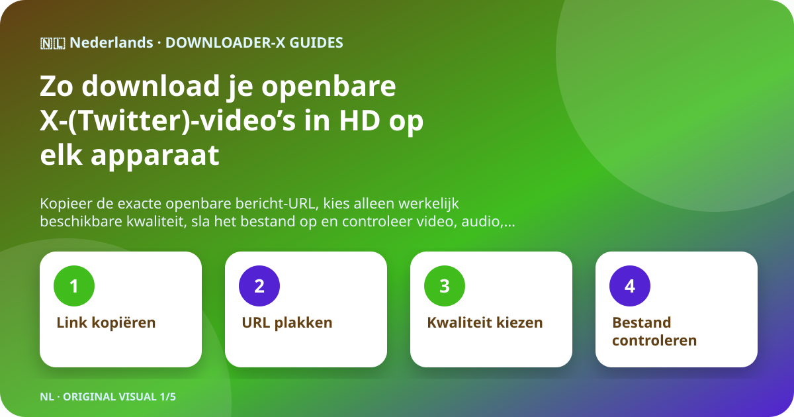
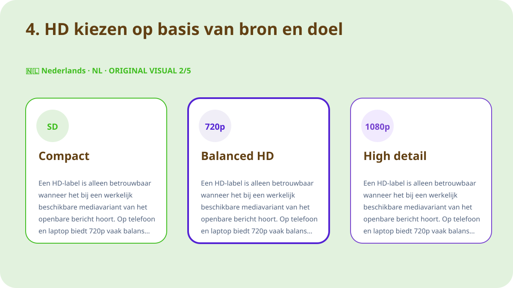
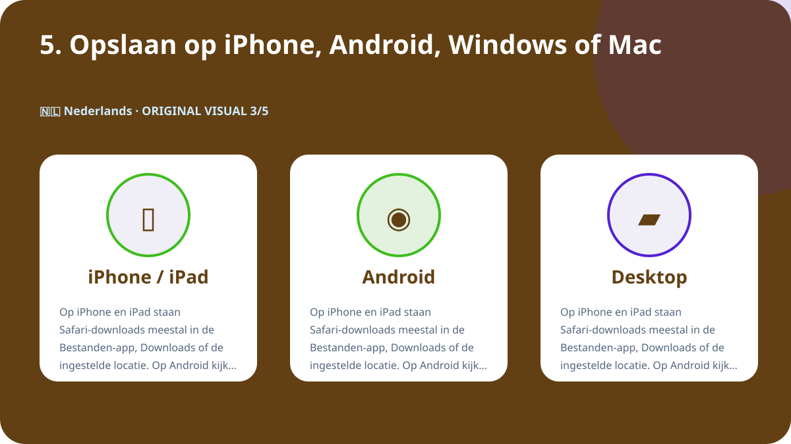
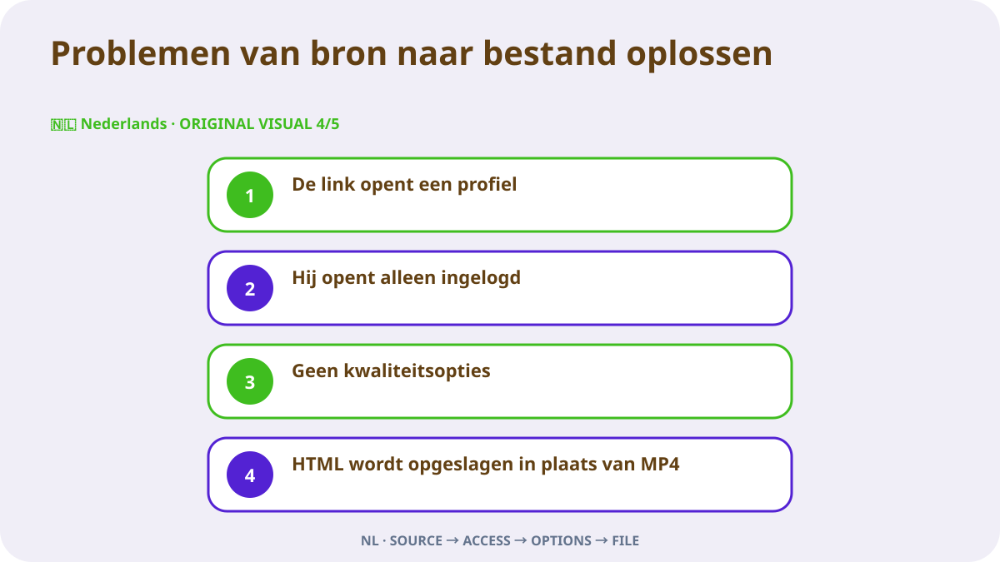

Kort antwoord
Open het afzonderlijke X-bericht met de video, bevestig dat het openbaar is en gebruik Delen om de berichtlink te kopiëren. Plak de URL in Downloader-X, kies een MP4-variant die echt in het resultaat staat en speel na het opslaan begin, midden en einde af. Gebruik dit alleen voor eigen video’s, media met een passende licentie of inhoud waarvoor de eigenaar duidelijke toestemming heeft gegeven. Een openbare-linkstroom hoort geen X-wachtwoord, verificatiecode, browsercookie of externe toegang te vragen.

1. Openbare toegang en gebruiksrecht controleren
Begin bij het oorspronkelijke bericht, niet bij een profiel, zoekresultaat, screenshot of doorgestuurde preview. Open de URL in een nieuw tabblad en vergelijk account, tekst, miniatuur en duur. Openbare zichtbaarheid is een toegangsinstelling en geeft niet automatisch toestemming voor herpublicatie, bewerking, verkoop of reclamegebruik. Is het account beschermd, het bericht verwijderd, speciale toegang nodig of inhoud beperkt, stop dan en vraag de eigenaar om een toegestane kopie in plaats van de controle te omzeilen.
Auteursrecht, toestemming en naamsvermelding
Openbare zichtbaarheid is toegang, geen licentie. Bewaar eigen video’s, compatibel gelicentieerde media of duidelijk toegestane inhoud. Voor herpublicatie, bewerking of commercieel gebruik moet de toestemming dat doel dekken; bewaar schriftelijk bewijs. Respecteer personen, privégegevens, gevoelige locaties en minderjarigen in beeld en presenteer andermans werk niet als het jouwe.
2. De exacte bericht-URL kopiëren
De invoerlink moet één bericht met de video aanwijzen. Open in X Delen, kopieer de berichtlink en test hem eenmaal in een nieuw tabblad. Profiel- en tijdlijn-URL’s bevatten meerdere berichten en bepalen het doelmedium niet. Deze korte controle scheidt een fout adres van een dienststoring en vermindert herhaalde klikken die onvolledige of dubbele bestanden maken.
- Open het oorspronkelijke videobericht als afzonderlijke pagina.
- Kopieer via Delen in plaats van de URL handmatig te typen.
- Controleer x.com of twitter.com en een echte bericht-URL.
- Open een nieuw tabblad en vergelijk account, tekst, miniatuur en video.
- Bewaar bron-URL en toestemmingsbewijs bij het bestand.
3. Link plakken en alleen echte resultaten kiezen
Plak de gecontroleerde URL in de X-downloader en start de verwerking eenmaal. Wacht op de werkelijke opties en vergelijk titel of preview met het bronbericht. Selecteer uitsluitend formaten en resoluties die echt worden getoond. Beschouw een belofte van 4K, 1080p of geen watermerk niet als capaciteit wanneer de bron die variant niet levert. Bij mislukking hoort een duidelijke foutmelding; een HTML-pagina, installatieprogramma of verkeerd bestand mag niet als geslaagde video worden aangeboden.
Originele Nederlandse demonstratievideo
Deze video is speciaal voor deze pagina gemaakt met beelden, kleuren en teksten die in geen andere taal worden herhaald.
4. HD kiezen op basis van bron en doel
Een HD-label is alleen betrouwbaar wanneer het bij een werkelijk beschikbare mediavariant van het openbare bericht hoort. Op telefoon en laptop biedt 720p vaak balans tussen scherpte, data en opslag; 1080p is nuttig op grotere schermen als de bron het echt aanbiedt. Twee bestanden met dezelfde resolutie kunnen verschillen in bitrate, codec en compressie, dus speel ze af en vertrouw niet alleen op de naam. Als geluid nodig is, kies een gecombineerde video- en audio-optie en controleer de track direct na het opslaan.

5. Opslaan op iPhone, Android, Windows of Mac
Op iPhone en iPad staan Safari-downloads meestal in de Bestanden-app, Downloads of de ingestelde locatie. Op Android kijk je in de downloadlijst van de browser of de Files-app. Op Windows, macOS, Linux en ChromeOS controleer je de map Downloads en browsergeschiedenis voordat je opnieuw klikt. Is er weinig ruimte, verwijder dan onnodige kopieën of kies lagere resolutie. Installeer geen onbekende downloadmanager alleen omdat een pagina zegt dat dit verplicht is.

6. Het opgeslagen bestand verifiëren
De taak is klaar wanneer het bestand als echte video opent, niet wanneer de voortgangsbalk verdwijnt. Controleer voor archiveren of delen:
- Het type past bij de keuze, bijvoorbeeld MP4, en is geen HTML of installer.
- De grootte is niet nul en aannemelijk voor duur en kwaliteit.
- Begin, midden en einde spelen beeld, duur en audio correct af.
- Naam, map, bron-URL en toestemming zijn vastgelegd.
Bron documenteren voor langdurige opslag
Noteer bij meerdere clips account, datum, permanente URL, korte beschrijving, gekozen variant, bestandsgrootte en grond voor toestemming. Zo ontstaan geen bestanden zonder herkomst en kun je credits of licentie later controleren. Kopieer bij quote post, antwoord of thread de URL van het bericht dat de video werkelijk bevat, niet van een bericht dat er alleen naar verwijst.
Problemen van bron naar bestand oplossen

De link opent een profiel
Ga terug naar het videobericht en kopieer via Delen; een profiel bepaalt geen enkel medium.
Hij opent alleen ingelogd
Inhoud kan beschermd of beperkt zijn. Deel geen gegevens of cookies en vraag een toegestane kopie.
Geen kwaliteitsopties
Bevestig dat het bericht bestaat, native video bevat en via de URL opent; vernieuw eenmaal.
HTML wordt opgeslagen in plaats van MP4
Verwijder het bestand, wijzig de extensie niet en controleer URL en echte video-optie opnieuw.
De video heeft geen geluid
Controleer bron, volume en een andere betrouwbare speler; kies zo nodig een gecombineerde variant.
Veiligheid en privacy
Een openbare-linkstroom vereist geen X-wachtwoord, tweestapscode, geëxporteerde cookie, externe besturing, uitvoerbaar installatiebestand of uitschakeling van bescherming. Stop bij .exe, .dmg of een ongerelateerde extensie. Controleer domein, type en herkomst voor openen. Verplaats toegestane bestanden op een gedeeld apparaat uit openbare mappen en verwijder onnodige tijdelijke kopieën.
Bestanden ordenen en duplicaten voorkomen
Gebruik een naam met kort onderwerp, account, datum en kwaliteit, bijvoorbeeld topic_creator_2026-08-30_720p.mp4. Scheid tijdelijke en gecontroleerde mappen en bewaar alleen noodzakelijke varianten. Meerdere klikken verbeteren de kwaliteit niet en leveren meestal duplicaten of deelbestanden op. Bewaar bron-URL, credit en gebruiksvoorwaarden in een notitie of spreadsheet van het project.
Laatste controle van 60 seconden
- De URL opent het juiste videobericht.
- Het bericht is openbaar zonder controle te omzeilen.
- Je bent eigenaar of hebt toestemming.
- De dienst vraagt geen gegevens of cookies.
- De gekozen kwaliteit staat in het echte resultaat.
- Het apparaat heeft voldoende opslag.
- Bestandstype en grootte zijn aannemelijk.
- Beeld en audio spelen volledig.
- Bron en credit zijn vastgelegd.
- Later gebruik blijft binnen de toestemming.
Veelgestelde vragen
Werken x.com- en twitter.com-links?
Ja, als ze hetzelfde openbare bericht openen en de bestemming is gecontroleerd.
Waarom is 1080p niet altijd beschikbaar?
Resolutie hangt af van het bronbestand en de werkelijk beschikbare varianten.
Kun je uit een beschermd account downloaden?
Nee. Deze gids geldt voor openbare berichten en omzeilt geen beperkingen.
Waar staat het bestand op iPhone?
Meestal in de Bestanden-app, Downloads of de in Safari gekozen locatie.
Wat doe je met een HTML-bestand?
Verwijder het, hernoem het niet en controleer URL en video-optie opnieuw.
Mag een openbaar bericht direct opnieuw worden geplaatst?
Nee. Een licentie of toestemming voor herverdeling en het beoogde gebruik is nodig.
Andere talen en verwante gidsen
Begin met een gecontroleerde openbare URL
Plak de juiste link, kies alleen beschikbare kwaliteit en controleer het bestand voor gebruik.
Downloader-X voor X gebruiken